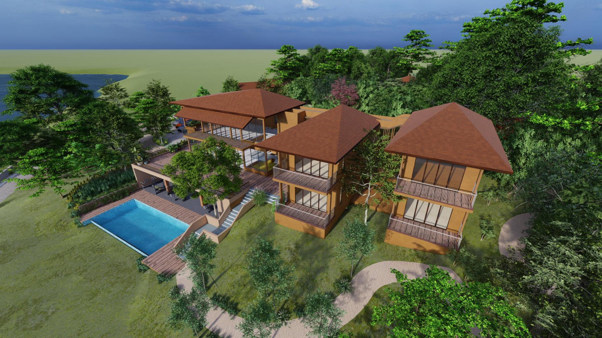

Industry · Structural Design
Residential / Farm House Structures
Structural analysis and design of residential and farm-house buildings including foundation systems, steel and reinforced-concrete framing, and detailing for constructability.